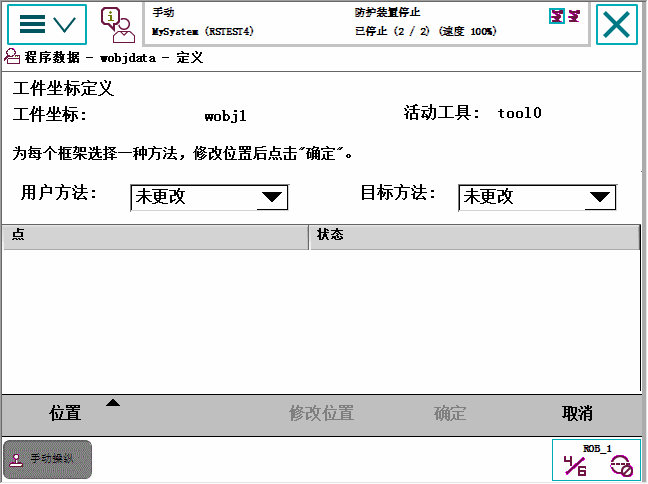
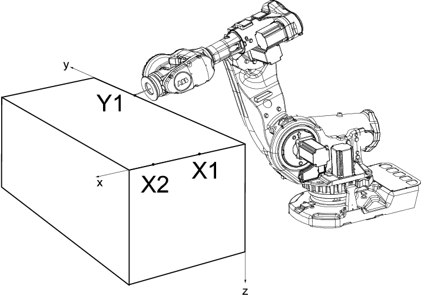
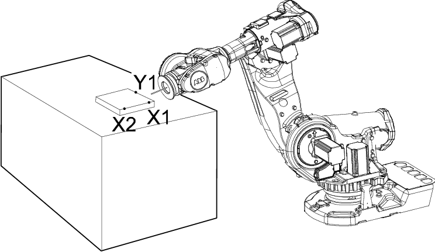

定义工件意味着机器人将用于指出其所在位置。 共需定义三个位置，两个位于 x 轴上，一个位于 y 轴上。
您定义工件时可以使用用户框架或工件框架，或者两者同时使用。 用户选择框架与工件框架通常是重合的。 如果不一致，工件框架将偏移于用户框架。
此程序描述定义用户框架或工件框架或定义二者的方法。注意，此程序仅适用于用户创建的工件，对默认工件 wobj0 不适用。也可从 Program Data（程序数据）窗口定义工件。
操作 | |
1 | 在 ABB 菜单中，点击 Jogging（微动控制）。 |
2 | 点击 Work object（工件），显示可用工件列表。 |
3 | 选择您想要定义的工件，然后点击 Edit（编辑）。 |
4 | 在菜单中，点击 Define...（定义...）。 |
5 | 从 User method（用户方法）和/或 Object method（工件方法）菜单中选择方法。请参阅定义用户框架和定义工件框架。  |
本节介绍如何定义用户框架。

x 轴将通过点 X1-X2，y 轴通过 Y1。
操作 | Information | |
1 | 在 User method（用户方法）弹出式菜单中，点击 3 points（3 点）。 | |
2 | 按下三位使动装置，将机器人移至您要定义的第一个点X1、X2或Y1）。 | X1 和 X2 之间的距离越大，定义就越精确。 |
3 | 选择列表中的点。 | |
4 | 点击 Modify Position（修改位置），定义该点。 | |
5 | 重复步骤 2 和 4，定义另外两个点。 |
本节介绍将工件框架偏移用户框架时如何定义工件框架。

x 轴将通过点 X1-X2，y 轴通过 Y1。
操作 | |
1 | 在 Object method（工件方法）弹出式菜单中，点击 3 points（3 点）。 |
2 | 定义方法参见定义用户框架中的步骤 2 到 4。 |
这些定义的位置一般只作为临时位置用于控制器计算工件的位置，此后就会被丢弃。但是也可以将这些位置保存到程序模块以便以后使用或分析。
当保存这些位置时会创建一个新的程序模块，并使用控制器提供的预定义名称在其中存储这些位置。虽然此后可以修改这些位置的名称，但是建议使用预定义的名称来加载这些位置。
 | 注意 保存的仅仅是位置 (robtarget)。在修改定义的位置时，请注意此前使用的工具。 |
操作 | |
1 | 完成工件框架定义并修改好所有位置后，请点击确定。 |
2 | 在保存修改的点对话框点击是。 |
3 | 点击 ABC 更改程序模块的名称，点击确定接受名称。 |
4 | 检查显示在保存对话框的位置名称和模块名称，点击确定。 |
在某些情况下，可能无法或不适合使用机器人来确定位置。这种情况下，可以在其他地方定义或计算出位置，数据然后加载到工件坐标定义对话框。
加载的位置可以来自任意程序模块，但是建议使用保存修改的点对话框中，用控制器提供的预定义位置名称命名的模块。
小心 在加载任何位置前，请确保在工件坐标定义对话框中激活了正确的工具和工件。 |
操作 | |
1 | 在工件坐标定义对话框，点击位置，然后点击加载。 |
2 | 点击包含校准点的模块，然后点击确定。 |
3 | 如果控制器在模块中找到预定义位置，就会自动将位置加载到正确的用户或对象点。 在加载对话框，点击确定。 |
4 | 如果某些位置缺失少或者名称不正确，则控制器会无法自动加载位置，这样用户就会被提示手动匹配位置。 点击列表中的每个点，从下拉列表手动分配位置。点击 确定。 |
5 | 如有必要，使用修改位置定义无法加载的其余点。 |